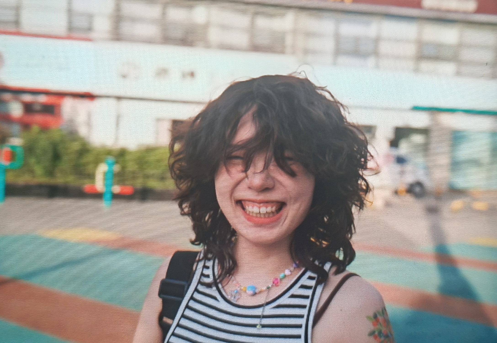

CONTACTS
Email: mingzhufan2000@gmail.com Telephone: +31 06 4778 6897(phonecall/SMS) +86 187 8023 0220 (WhatsApp/SMS) Linkedin: Mingzhu Fan
LANGUAGES
Chinese Native(Chinese Mandarin) English Professional / IELTS 7.5 (issued on 10.7.2021) German C1 / TestDaf 17 (issued on 2.5.2021) Dutch B2 / NT2 (issued on 29.8.2023) actively learning Sanskrit A1-A2 (90-hour minor lesson in 2022)
SKILLS
Physical Computing sensors, Arduino; Programming Environments Processing Computing Languages JavaScript, Python Web things node, APIs, html5, css 3D Modeling, Rendering, 2D/3D Animation Blender, Rhino, Keyshot, Eevee, Procreate Image and Video Editing Adobe Photoshop, AfterEffects
MINGZHU FAN
she/her
I'm a designer and artist based in Amsterdam, NL. I like transdisciplinary works incorporating art, music, and culture and I wish I can make people perceive the world around them in an unconventional way. Alongside design, I enjoy drawing very much.EDUCATION
Technology University of Eindhoven, Netherlands
Industrial Design, MSc
09.2022-08.2024
Aalto University, Finland
School of Arts, Design and Architecture, Exchange student
08.2023-12.2023
Sichuan University, China
Industrial Design, BEng
09.2018-06.2022
Chengdu No.7 High School, China
09.2015-06.2018
PROJECT
Make A Portrait of Your Childhood-Self
Final project in TU/Eindhoven (Industrial Design, MSc)
2024
The Bedroom
Exhibited in UROBOROS Festival, Prague
2023
QUETTA
Exhibited in Green Office, TU/Eindhoven
2022
WORKING EXPERIENCE
Content Designer
Resn·Internship
Creating contents for social media platforms, campaigns, award submissions and internal documantation; content planning
04.2025-
On-site
Tutor
ROSSO FASHION & ART EDUCATION · Freelance
Tutoring high school/ bachelor design students through their deign process
08.2024-
Online
Website developer
Chengdu Chouwey Technology Co., Ltd · Full time
Develop the E-commerce website for a food export service company
07.2024-09.2024 full time, 09.2024-10.2024 part time
Chengdu, China
Restaurant Crew Member
Hawaiian Poké Bowl (Eindhoven) · Part time
Kitchen, Bowl making, Counter, and provided excellent customer service in a fast-paced environment
12.2024-02.2025
Eindhoven, Netherlands
Waitress
Hot&Hot (Eindhoven) · Part time
Working language: Dutch; Provided excellent customer service in a fast-paced environment
02.2024-08.2024
Eindhoven, Netherlands
German teacher assistant & IELTS teacher
Freelance
Teaching A1-B1 level German to those with a need for German knowledge or enthusiasts. Providing exam preparation guidance for IELTS learners.
03.2023-
Online
Live Music Bassist
ErMa Bar (Greenland 468) · Part time
Performed live music for customers, collaborating with other musicians and enhancing the atmosphere of the venue.
10.2021-05.2022
Chengdu, China